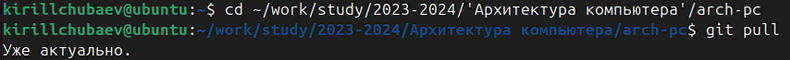
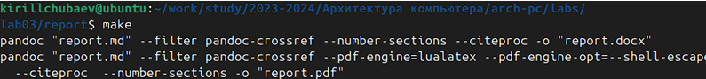
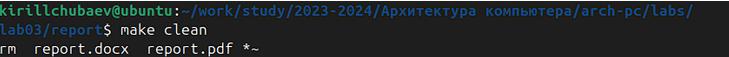
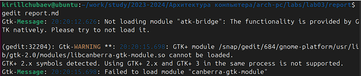
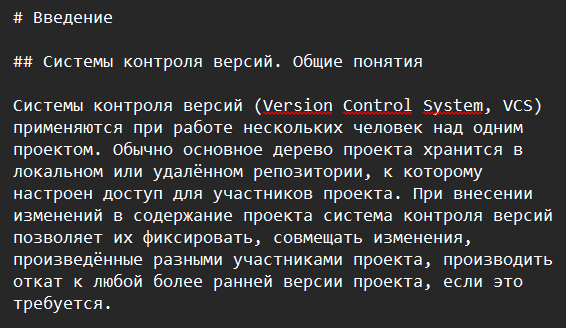
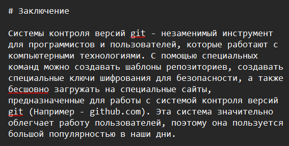
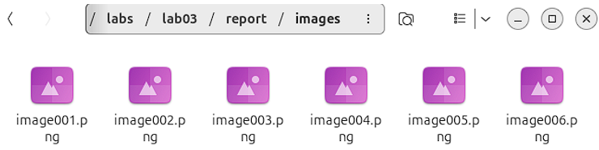

Цель работы
Целью данной работы является научиться оформлять отчёты с помощью
легковесного языка разметки Markdown.
Ход выполнения лабораторной
работы
- Я открыл терминал и перешел в каталог курса, сформированный при
выполнении лабораторной работы №2, и обновил локальный репозиторий:

- Далее провёл компиляцию шаблона с использованием Makefile. Для этого
ввёл команду make для проверки работоспособности команды. Далее с помощю
команды make clean удалил файлы.
 
- Я открыл файл report.md и начал выполнять задание данной
лабораторной работы, а именно: полный отчёт лабораторной работы №2. В
свой отчёт я добавил: введение, основную часть, заключение и список
литературы:

- Для корректного изображения скриншотов я разместил их в каталоге
image:
  
Далее с помощью команды make я скомпилировал файлы report.docx и
report.pdf
Выполненный отчёт с использованием Markdown я загрузил на
GitHub:
Вывод
В ходе выполнения данной лабораторной работы я научился оформлять
отчёты с помощью легковесного языка разметки Markdown.